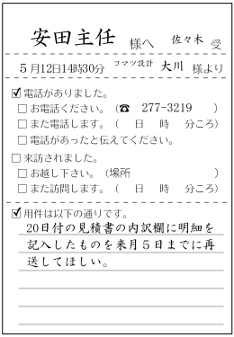
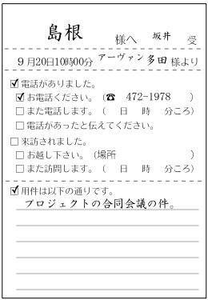
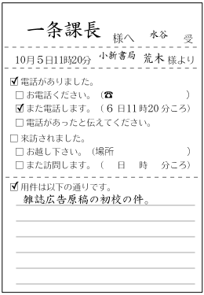

伝言を受ける場合
メモを作って指名された者（とりつげなかった者）に渡す。〔参考：ビジネス作文＞伝言メモ〕

自分の側からかけ直す場合
メモを作って指名された者（電話をかけ直す者）に渡す。〔参考：ビジネス作文＞伝言メモ〕

相手がかけ直すと言った場合
メモを作って指名された者（相手がかけ直した電話を受ける者）に渡す。〔参考：ビジネス作文＞伝言メモ〕


 「［指名された者の名前］には、（［相手の名前］様から）お電話がありましたことを伝えておきます（ので）。」
「［指名された者の名前］には、（［相手の名前］様から）お電話がありましたことを伝えておきます（ので）。」
※相手がかけ直すと言ったときも、電話があったことを伝えると言うとよい。

 自分：「いかがいたしましょうか？」
自分：「いかがいたしましょうか？」
相手：「それでは、４時頃、改めてお電話いたします。」
自分：「わかりました。山口には、お電話がありましたことを伝えておきます。」
※自分の側からかけ直すように申し出たときに、相手がかけ直すと言ったら「恐れ入ります（が）、よろしくお願い（いた）します。」などと言うとよい。
自分：「こちらから、折り返し、おかけ直しいたしましょうか？」
相手：「いえ、それでは、また後ほどお電話差しあげますので。」
自分：「恐れ入ります。よろしくお願いいたします。」